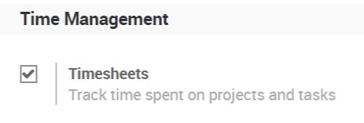
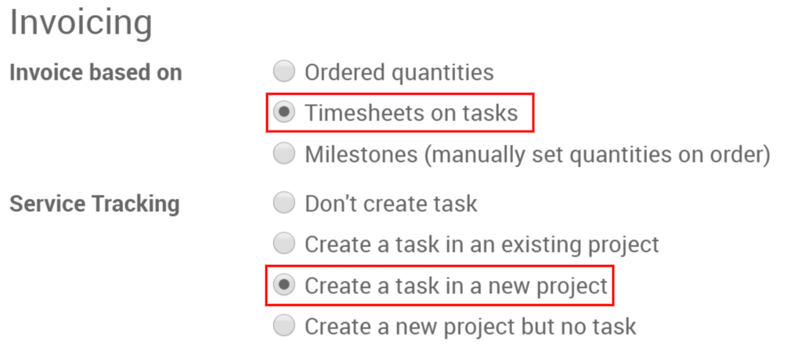
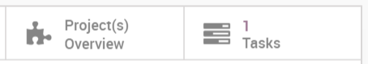
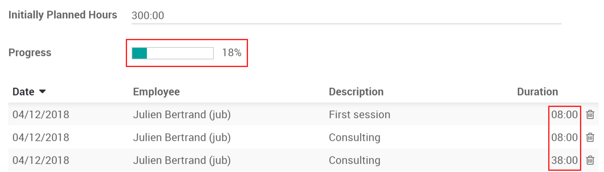
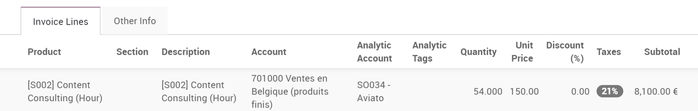
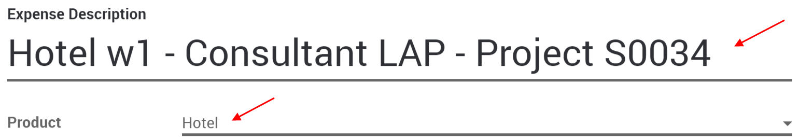
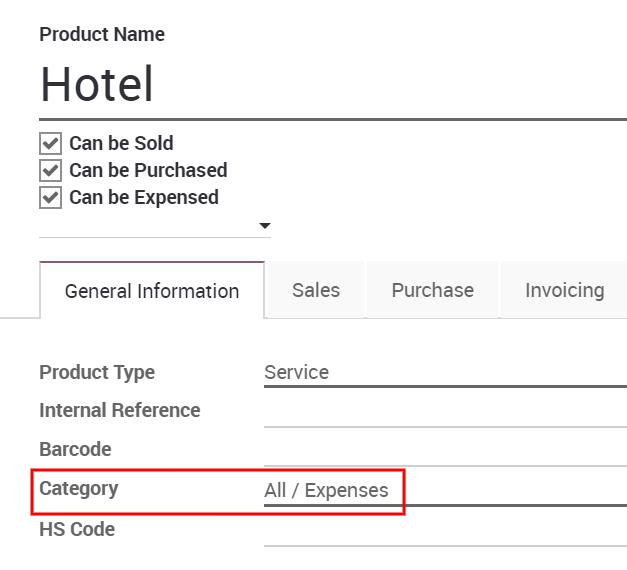
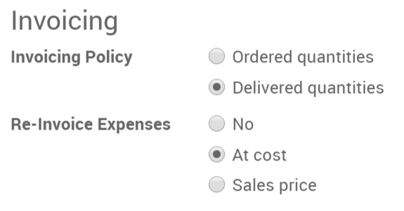
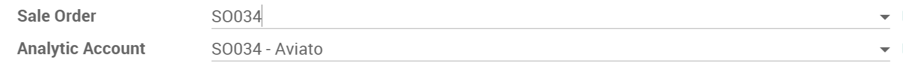

Time and Materials is generally used in projects in which it is not possible to accurately estimate the size of the project, or when it is expected that the project requirements would most likely change.
This is opposed to a fixed-price contract in which the owner agrees to pay the contractor a lump sum for the fulfillment of the contract no matter what the contractors pay their employees, sub-contractors, and suppliers.
For this documentation I will use the example of a consultant, you will need to invoice their time, their various expenses (transport, lodging, ...) and purchases.
Invoice time configuration
To keep track of progress in the project, you will need the Project app. Go to to install it.
In Project you will use timesheets, to do so go to and activate the Timesheets feature.
Invoice your time spent
From a product page set as a service, you will find two options under the invoicing tab, select both Timesheets on tasks and Create a task in a new project.
You could also add the task to an existing project.
Once confirming a sales order, you will now see two new buttons, one for the project overview and one for the current task.
You will directly be in the task if you click on it, you can also access it from the Project app.
Under timesheets, you can assign who works on it. You can or they can add how many hours they worked on the project so far.
From the sales order, you can then invoice those hours.
Expenses configuration
To track & invoice expenses, you will need the expenses app. Go to to install it.
You should also activate the analytic accounts feature to link expenses to the sales order, to do so, go to and activate Analytic Accounting.
Add expenses to your sales order
From the expense app, you or your consultant can create a new one, e.g. the hotel for the first week on the site of your customer.
You can then enter a relevant description and select an existing product or create a new one from right there.
Here, we are creating a Hotel product:
under the invoicing tab, select Delivered quantities and either At cost or Sales price as well depending if you want to invoice the cost of your expense or a previously agreed on sales price.
To modify or create more products go to .
Back on the expense, add the original sale order in the expense to submit.
It can then be submitted to the manager, approved and finally posted.
It will then be in the sales order and ready to be invoiced.
Invoice purchases
The last thing you might need to add to the sale order is purchases made for it.
You will need the Purchase Analytics feature, to activate it, go to and select Purchase Analytics.
While making the purchase order don't forget to add the right analytic account.
Once the PO is confirmed and received, you can create the vendor bill, this will automatically add it to the SO where you can invoice it.